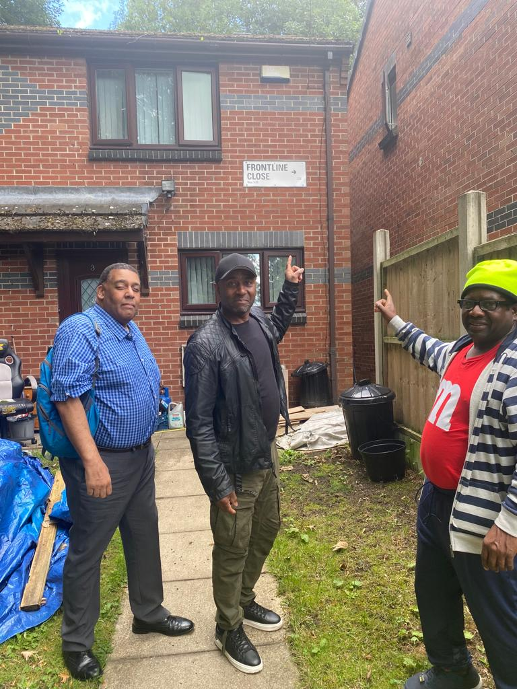

A practical step-by-step model for community-led development.
BAFT’s process combines community buy-in, planning and delivery, so projects are rooted in local need and built with long-term viability in mind.

Community engagement
We begin by listening to local people, identifying priorities and building trust so that every project starts with the community’s voice at the centre.
Research and planning
BAFT uses evidence, lived experience and practical planning to shape projects that are realistic, meaningful and sustainable.
Skills and participation
Through the community self-build model, local people are encouraged to take part, build confidence and develop practical skills that support personal growth and opportunity.
Delivery and long-term impact
Projects are delivered with a focus on lasting value — improving homes, spaces and community resources while creating stronger foundations for the future.